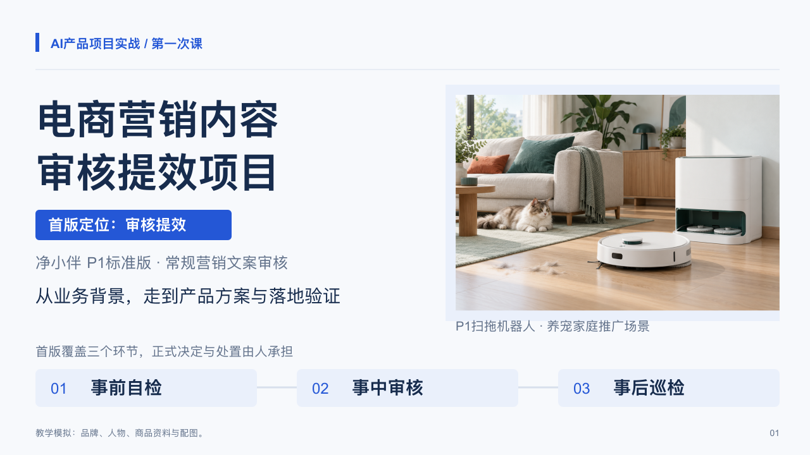
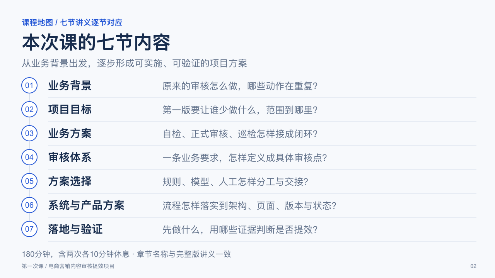
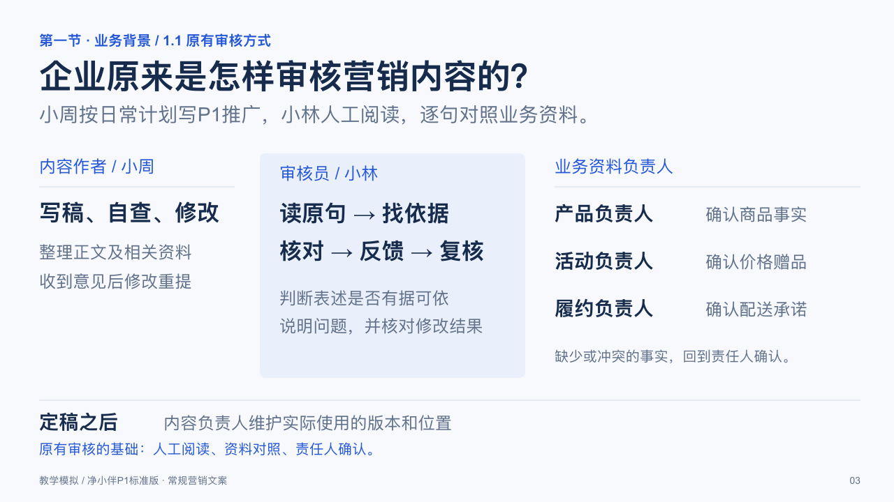
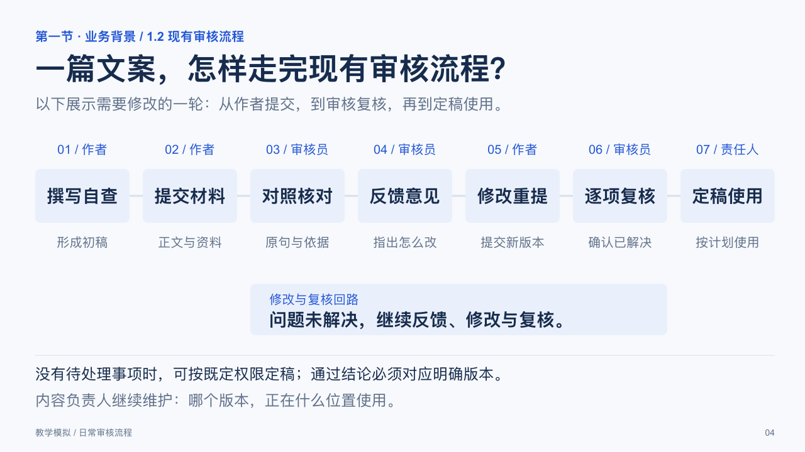
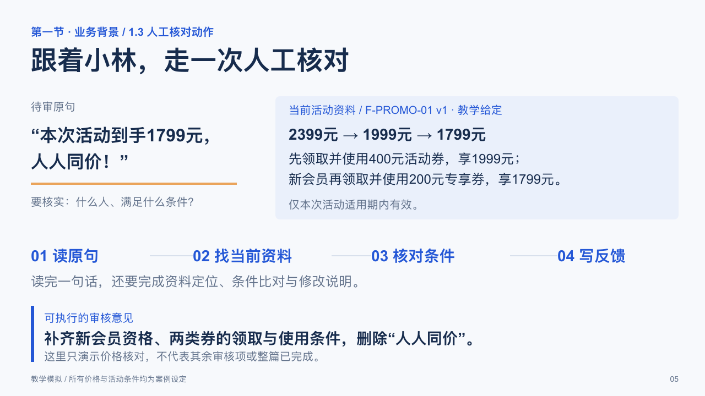
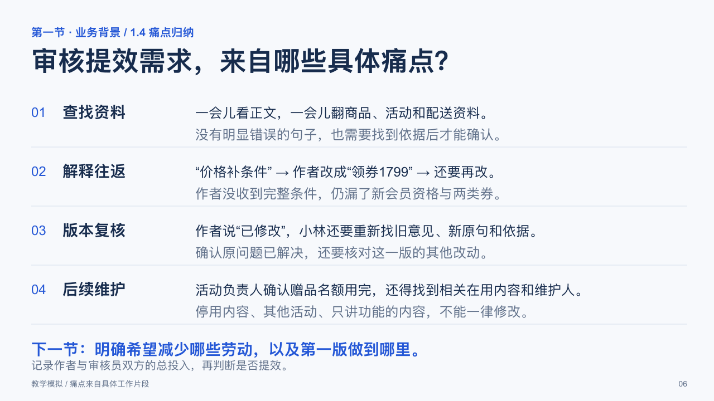

第一次课 · 开场与第一节重做样稿
共6页：前2页为封面与课程地图。第一节由原P03—P10压缩为4页，依次讲企业原来的审核方式、审核流程、人工核对实例和具体痛点。后续章节尚未重做；原63页大纲中的后续页码待整体排版时顺延。本样稿优先确定业务讲述顺序。
P01 · 项目封面
P02 · 七节课程地图
P03 · 企业原来的审核方式
P04 · 现有审核流程
P05 · 走一次人工核对
P06 · 从流程归纳痛点
案例品牌、角色、商品参数、活动条件与配图为教学模拟。PPT含6页可编辑文字与图形以及逐页教师备注。此PDF由逐页画面生成，用于浏览。